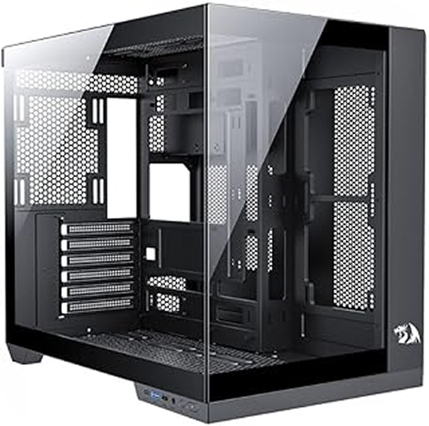

| Na informática, o gabinete de computador, também conhecido como case, caixa, chassis, carcaça ou torre,é o compartimento que contém a maioria dos componentes de umc omputador (normalmente, excluindo o monitor, teclado e mouse). Um case de computador, às vezes, é referido metonimicamente como CPU, referindo-se a um componente situado dentro da caixa. CPU era um termo comum nos primeiros computadores domésticos, quando outros periféricos da placa-mãe normalmente eram alojados em seus próprios cases separados. |
 |